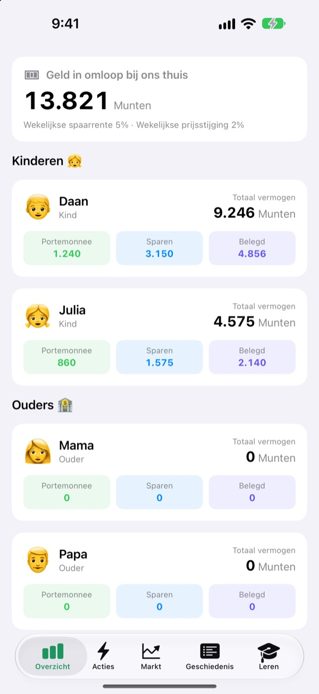
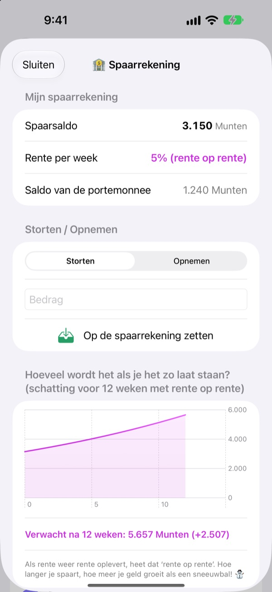
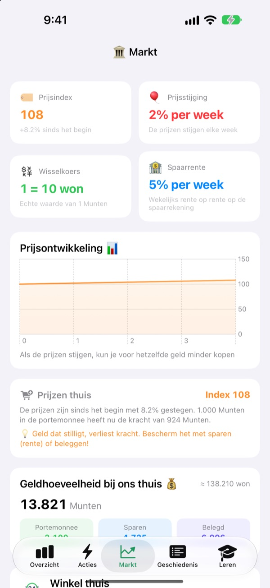
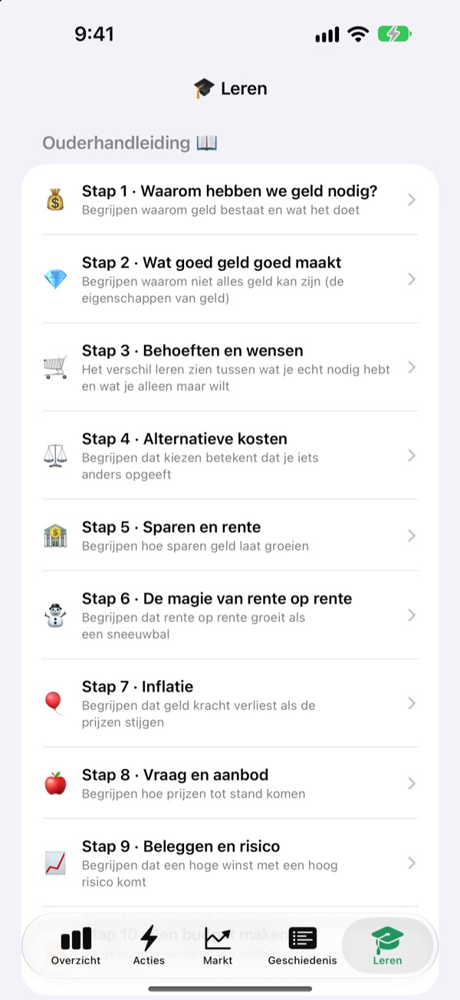

Zakgelddag wordt
een les over geld
Jij bent de centrale bank van het gezin, je kinderen zijn de klanten. Ze krijgen zakgeld in jullie eigen munt, kopen er snoep van, zien rente binnenkomen op hun spaargeld en beleven de ups en downs van een oefenfonds.
Alle functies zijn gratis. Er gaat nooit echt geld over de toonbank.

Waar zou jij 1.000 munten laten?
Dezelfde 1.000 munten zitten in een portemonnee, op een spaarrekening en in drie fondsen. Spring telkens een week vooruit en kijk wat er met elk gebeurt. Alles volgt dezelfde regels als de app.
"Spaar het op, dan groeit het." Komt dat echt aan bij een kind?
Rente, rente op rente, inflatie: hoe meer je uitlegt, hoe verder weg het klinkt. In SukSuk Zakgeld verdienen, besteden en wachten kinderen zelf. Zodra ze zien dat er rente op het spaargeld van vorige week staat, gaat het volgende zakgeld meteen naar de spaarrekening.
Geduld wordt zichtbaar beloond
Geld op de spaarrekening krijgt elke week rente op rente. Jij kiest het percentage, en een grafiek laat zien hoeveel het over 12 weken is als niemand eraan komt.
Een paar dagen de app niet geopend? Bij de volgende keer worden alle openstaande weken in één keer uitbetaald.

Zie prijzen de portemonnee leegeten
Het tabblad Markt zet de prijsindex van het gezin, inflatie, rente, geldhoeveelheid en fondsprijzen op één scherm. Als de prijzen stijgen, zie je hoeveel minder 1.000 munten in de portemonnee nog kopen.
Kinderen zien in duidelijke cijfers dat stilliggend geld krimpt, terwijl gespaard of belegd geld zijn waarde houdt.

Tien gesprekken om samen te voeren
De ouderhandleiding neemt je in tien stappen mee: waarom we geld nodig hebben, behoeften en wensen, opportuniteitskosten, sparen en rente, rente op rente, inflatie, beleggen en risico, tot het maken van een budget.
Met een rente-op-rentecalculator en een prijsexperimentcalculator verander je samen de getallen en zie je wat er gebeurt.

In drie stappen aan de slag
- 1
Geef je munt een naam
Bonen, Sterren, Munten: hoe jullie gezin hem ook wil noemen.
- 2
Kies een ouder-pincode
Vier cijfers. Alleen wie hem kent, kan zakgeld geven of de bankinstellingen wijzigen.
- 3
Voeg het gezin toe
Voeg kinderen en ouders toe, geef het eerste zakgeld en je kunt beginnen.
Wat staat waar
- Overzicht
- Ieders portemonnee, spaargeld en beleggingen in één oogopslag
- Acties
- Zakgeld geven of afschrijven, Streepjescode van artikel, Artikel toevoegen, Kind uitnodigen, Kindertelefoonstand, Bankinstellingen (ouder-pincode nodig)
- Markt
- Prijsindex, inflatie, wisselkoers, spaarrente, geldhoeveelheid, fondsprijzen
- Geschiedenis
- Elke geldbeweging per datum, per gezinslid of per soort
- Leren
- Ouderhandleiding in tien stappen, rente-op-rentecalculator, prijsexperimentcalculator
- 🐢 Schildpad Zeker Fonds
- Kleine dagelijkse schommelingen, langzaam en gestaag omhoog
- 🐰 Konijn Groeiaandelen
- Op en neer, maar ze groeien
- 🚀 Raket Avontuuraandelen
- Kunnen de lucht in schieten of keihard dalen
Bij de start geldt 5% spaarrente en 2% inflatie per week. Beide pas je aan in de Ouderstand onder Bankinstellingen. Met 0% inflatie blijven de prijzen gelijk.
Alle functies zijn gratis
Gratis
- Jullie eigen gezinsmunt en een met pincode beveiligde Ouderstand
- Zakgeld geven en afschrijven, Winkel thuis en betalen met streepjescode
- Een spaarrekening met wekelijks rente op rente
- Drie oefenfondsen met rendementsgrafieken
- Het tabblad Markt en een geschiedenis van alle transacties per datum
- De ouderhandleiding in tien stappen en twee calculators
- Kindertelefoonstand en synchronisatie via iCloud
Steun de ontwikkelaar
- Geef een kleine fooi van elk bedrag via Bankinstellingen in de Ouderstand
- Een fooi ontgrendelt niets. De app werkt precies hetzelfde
Geen advertenties, geen abonnement. De fooiknop zit alleen in de Ouderstand, dus je kinderen zien nooit een koopknop.
Vragen
Komt er echt geld aan te pas?
Nee. De munt en alle transacties in de app zijn nep en alleen bedoeld om te leren. Niets is gekoppeld aan een echte bankrekening, pas of contant geld.
Hoe zien we dezelfde rekeningen op de telefoon van mijn kind?
Apparaten die met hetzelfde iCloud-account zijn ingelogd, synchroniseren de gezinsrekeningen automatisch. Controleer of iCloud aanstaat via Instellingen > Apple Account > iCloud. Op het tabblad Acties kun je bij Kind uitnodigen een QR-uitnodiging maken die je kind met de camera scant. Zonder iCloud blijven de gegevens alleen op dat ene apparaat.
Wat is de Kindertelefoonstand?
Die maakt van de telefoon van je kind een scherm speciaal voor hem of haar. Je kind ziet alleen de eigen portemonnee, beleggingen, geschiedenis en lessen, en om eruit te gaan is de ouder-pincode nodig.
Ik ben de ouder-pincode vergeten.
De pincode staat alleen op het apparaat, dus zelfs de ontwikkelaar kan hem niet terughalen. Als je de app verwijdert en opnieuw installeert, kun je alles opnieuw instellen, maar dan worden ook je bestaande gegevens gewist.
Hoe werkt de spaarrente?
Elke week wordt er automatisch rente op rente bij het spaarsaldo opgeteld. Je kiest het percentage in de Ouderstand, en verstreken weken worden verrekend zodra de app weer wordt geopend.
Volgen de fondsprijzen de echte markt?
Nee. Fondsprijzen zijn oefengegevens die één keer per dag in de app veranderen. Hoe riskanter het fonds, hoe groter de schommelingen. Het zijn geen echte financiële producten.
Waarom stijgen de prijzen?
Zodat kinderen inflatie voelen, stijgt de prijsindex van het gezin elke week een beetje. Pas het tempo aan, of zet het op 0% om het uit te zetten, in de Ouderstand onder Bankinstellingen. Verhoog je meteen ook de prijzen van snoep en speelgoed in de Winkel thuis een beetje, dan blijft de les beter hangen.
Hoe wis ik alles?
Als je de app verwijdert, worden de gegevens op het apparaat gewist. Gegevens die naar iCloud zijn gesynchroniseerd, verwijder je via Instellingen > Apple Account > iCloud > Beheer opslag.
Worden gegevens van mijn gezin ergens naartoe gestuurd?
Nee. Er is geen registratie, en alle gegevens blijven op je apparaat en in je eigen iCloud-account. De ontwikkelaar ontvangt alleen feedback die je zelf vanuit de Ouderstand stuurt, plus anonieme gebruiksstatistieken en crashrapporten.
Op welke apparaten werkt het?
Op iPhone met iOS 17.0 of nieuwer.
Vragen, fouten of ideeën? Mail naar leeo@kakao.com. Met je apparaatmodel en iOS-versie erbij kunnen we je sneller helpen.